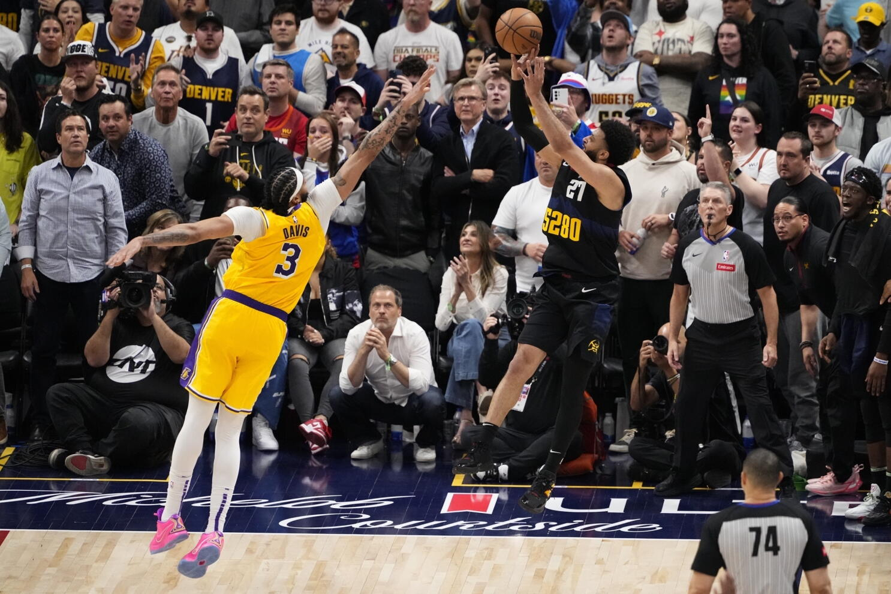
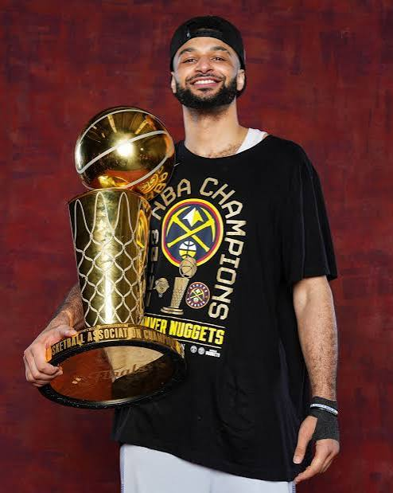

Jamal Murray (Kitchener, Ontario, 23 de febrero de 1997) es un jugador de baloncesto canadiense que pertenece a la plantilla de los Denver Nuggets de la NBA. Con 1,93 metros de estatura se desempeña en la posición de base. Jugó baloncesto universitario con los Kentucky Wildcats antes de ser seleccionado en la sexta posición del Draft de la NBA de 2016.
Es ampliamente reconocido por sus destacadas actuaciones en la postemporada de la NBA, formando una de las duplas ofensivas más letales de la liga junto a Nikola Jokić. En los playoffs de la burbuja de 2020, Murray anotó 50 o más puntos en múltiples partidos, consolidándose como uno de los anotadores más explosivos en momentos decisivos.
En la temporada 2022-23, regresó de una grave lesión de rodilla para ayudar a llevar a los Denver Nuggets a su primer campeonato de la NBA en la historia del equipo. En las Finales de la NBA contra Miami Heat, registró promedios destacados de más de 20 puntos y 10 asistencias por partido, siendo pieza clave para el título.

